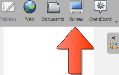

Interagire con altre applicazioni
La modalita Desktop ti permette di interagire con il sistema operativo e le tue applicazioni, mantenendo gli strumenti di OpenBoard sempre in primo piano.
Fai semplicemente clic sull'icona seguente:

Usa il selettore per interagire con il desktop e con le altre applicazioni.
Annotare applicazioni o siti web
Puoi annotare qualsiasi software con la penna
o con l'evidenziatore
 .
.